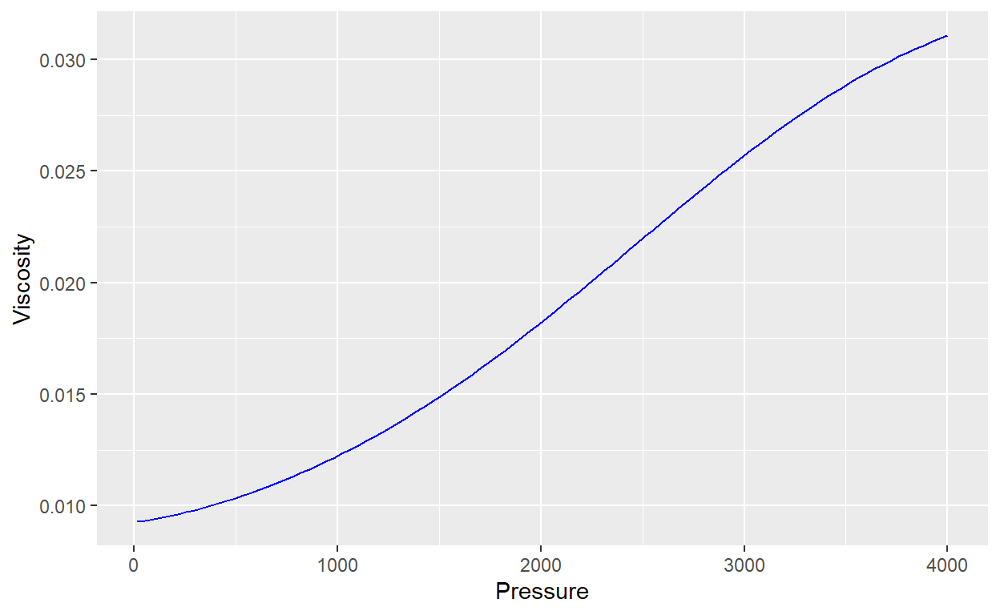

Estimate Pseudopressure to use it in reservoir engineering calculations
Because viscosity (\(\mu\)) and gas compressibility factor (\(Z\)) are function of pressure, the gas flow equation is nonlinear. In order to linearize it, the term pseusopressure (Al-Hussainy and Ramey, 1996) as introduced as
\[m(p) = \int_{p_0}^{p} \frac{2p}{\mu Z}dp\]
where \(p_0\) is a reference pressure
Normalized pseudopressure is a more convenient way of presenting pseudopressure because the unit of pseudopressure us \(psi^2/cp\) and the scale can be in the order of magnitude of \(10^6\). The pseudopressure integral can be multiplied by \(\mu Z/2P\) at average reservoir pressure or initial reservoir pressure to convert the unit to psi and scale pseudopressure to the pressure range.
\[m(p) = \left(\frac{\mu Z}{2p}\right)_{p_i} \int_{p_0}^{p} \frac{2p}{\mu Z}dp\]
As an example we are goint to calculate Normalized pseudopressure using some functions and the function for gas compressibility factor generated in past post.
First, we have to define the functions to calculate viscosity and gas compressibility factor, in this case, we use Lee and Papay correlations.
#Lee - gas viscosity
visg.LGE <- function(P, t, gg,Z){
M <- 28.96*gg;
K <- (9.4+0.02*M)*((t+459.67000)^1.5)/(209+19*M+(t+459.67000))
X <- 3.5+(986/(t+459.67000))+0.01*M
Y <- 2.4-0.2*X
deng <- 0.0014935*P*M/(Z*(t+459.67000))
visg <- K*exp(X*(deng^Y))/(10^4)
return(visg)
}
#Papay correlation - gas compressibility factor
z.papay <- function(Ppr, Tpr){
#Ppr <- 3
#Tpr <- 2
z <- 1-(3.53*Ppr)/(10^(0.9813*Tpr))+(0.274*Ppr^2)/(10^(0.8157*Tpr))
return(z)
}
Now, using the following data and before functions estimate gas viscosity and gas compressibility factor
library(ggplot2)
#Input data
Temp <- 60 #Temperature FF
gg <- 0.99 #Gas gravity
Ppc <- 494.341 #Pseudocritical pressure, psia
Tpc <- 298.893 #Pseudocritical temperature, R
#pseudoreduced temperature
Tpr <- (Temp + 460)/Tpc
#Pressure vector
Pressure <- seq(14.7, 4000, length.out = 100) #Pressure, psia
#Data frame from calculations
Data <- data.frame(Pressure = Pressure)
#Gas viscosity
Data$Z <- z.papay(Data$Pressure/Ppc, Tpr)
Data$Viscosity <- visg.LGE(Data$Pressure, Temp, gg, Data$Z)
plot_Z <- ggplot(Data) +
geom_line(aes(x = Pressure, y = Z), col = "red")
plot_vis <- ggplot(Data) +
geom_line(aes(x = Pressure, y = Viscosity), col = "blue")
plot_Z
plot_vis

To evaluate pseudopressure integral it is used numerical integration, in this case, midpoint rule or rectangle rule method.
\[ \int_{a}^{b} f(x)dx ~ (b-a)f\left(\frac{a+b}{2}\right)\]
library(plotly)
Data$pvisZ <- (2*Data$Pressure)/(Data$Z*Data$Viscosity)
#Fist, calculate de area in every data point
Data$Area <- c(0,0.5*(Data$pvisZ[2:nrow(Data)] + Data$pvisZ[1:(nrow(Data)-1)])*(Data$Pressure[2:nrow(Data)] - Data$Pressure[1:(nrow(Data)-1)]))
#Then, using cumsum() function, we sum the area values
Data$mp <- cumsum(Data$Area)
#Considering 4000 psi as initial pressure, we can normalized pseudopressure
Data$mp_norm <- Data$mp*(Data$Viscosity[nrow(Data)]*Data$Z[nrow(Data)])/(2*Data$Pressure[nrow(Data)])
plot_log <- plot_ly() %>%
add_lines(data = Data, x = ~Pressure, y = ~pvisZ, name = "2p/visZ", line = list(color = "blue")) %>%
add_lines(data = Data, x = ~Pressure, y = ~mp_norm, name = "Normalized m(p)", yaxis = "y2", line = list(color = "green")) %>%
layout(
xaxis = list(title = "Pressure, psia"),
yaxis = list(title = "2p/visZ"),
yaxis2 = list(overlaying = "y", side = "right", title = "Normalized m(p)")
)
plot_log
For attribution, please cite this work as
Vazquez (2021, Nov. 6). Chato Solutions: Pseudopressure Calculation . Retrieved from https://www.chatosolutions.com/posts/2021-11-06-pseudopressure/
BibTeX citation
@misc{vazquez2021pseudopressure,
author = {Vazquez, Rigoberto Chandomi},
title = {Chato Solutions: Pseudopressure Calculation },
url = {https://www.chatosolutions.com/posts/2021-11-06-pseudopressure/},
year = {2021}
}